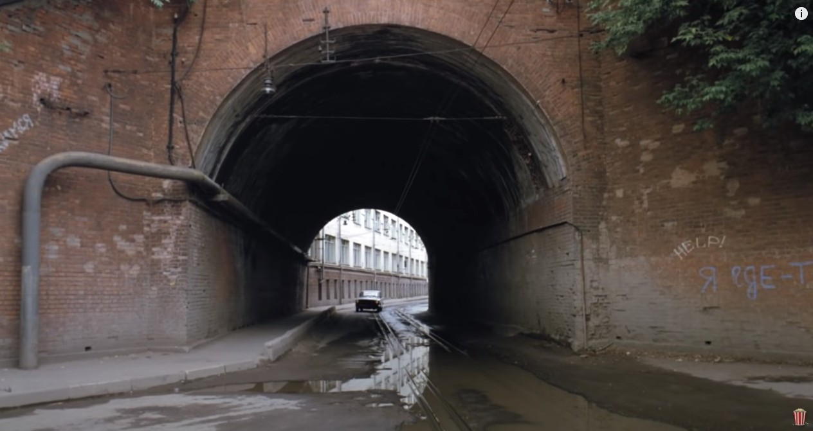

А я всегда мечтал о компе, для игр.
в классе 3,4-м купили БК. Играл упоенно, потом ко мне Тимур заехал как-то (ему чуть раньше купили).
И с тетрадки набил код, который рисует самолетик.
Я подумал "хуйня какая-то", вежливо похвалил и предложил дальше играть.
потом наигрался, и как-то случайно инструкцию открыл по бэйсику и понеслась. Потом ZX, бэйсик, ассемблер.
В школе на информатике свысока на всех смотрел :-)
Предупреждаю: здесь будет много про меня. Если хочется читать чисто про Эльдара, то сквозь это придется продираться. Моя задача ведь не только дать факты из жизни. Я вспоминаю истории, в которых участвовали мы оба. Пишу, как я к нему относился. Хочу показать, что он был важным человеком в моей жизни. Так что это и про меня.
Утром 4 февраля 2020 года, около 11 часов, я сидел на работе, мы обменивались с Эльдаром малозначительными сообщениями в skype, как это часто бывало. Он написал, что "приложился к стакану": грустно, пишет, толковый коллега уволился. Я понимал, что у него и так назревало. За несколько дней до этого умерла мама бывшей жены. Потом он ещё написал, что тётя Фая хочет продать дом и перебраться в Самару к родственникам. Этот дом был большой частью его жизни: он проводил там летние месяцы в детстве, и потом на протяжении всей жизни ездил туда летом отдыхать, в этот дом, к тёте — это называлось "в Самару". Однажды мы ездили вместе, потом расскажу. Я спросил: вроде он рассказывал, что дом они совместно строили, семьями? Мутная, говорит, история, с наследством; в общем, на тёте вроде бы всё. Спрашиваю: и что же, не будешь больше туда ездить? Не знаю, говорит, может и съезжу ещё: там кемпинг за забором. "Побродить, так сказать, по детству" — так и написал, дословно. Через час пишет: "Лайфхак, когда в глазах двоится, надо ладонь перпендикулярно приложить к носу и смотреть ведущим глазом в тему. Второй можно не замжуривать." Ну, думаю, понятно: продолжает выпивать. Пишу: "Ты там на балконе осторожнее". Знал, что он курить на балкон ходит, обсуждали за несколько дней: мол, холодно, февраль всё-таки. Отвечает: "нее, это для просмотра телека". Такие вот пустяки. Это я получил в 12:25, а у него в Москве было, соответственно, 14:25.
Потом я как-то закрутился по работе, и больше мы в тот день друг другу не писали.
На следующий день я заболел, и болел потом неделю. 12 февраля послал ему какую-то ссылку. Мы часто обменивались ссылками на показавшиеся интересными истории в интернете или смешные картинки. Смотрю: не прочитал. И на следующий день. Skype же ещё показывает, когда пользователь в последний раз был в сети. Ну, пишет, "несколько дней назад" или как-то так. Ладно. Где-то в подсознании прикидываю варианты. Подумал, может он в Самару поехал. У него же двоюродный брат умер за несколько недель до этого. Может, думаю, поехал помочь, или на сколько-то дней (типа "на 40 дней"); может, с родителями. Или, может, взломали аккаунт в skype, или другие какие проблемы технические? Может, skype сбоит, не показал оповещения? Потом, закончили же разговор мы на том, что он выпил: ну, может, запой? Но вроде запой никогда не был ему препятствием выйти в интернет или написать… Заболел? Попал в больницу? Непонятно.
20-го февраля я начал уже беспокоиться. Написал на электронную почту. Написал в Google Hangouts: забавным образом, последнее сообщение в нём было "Ау? Чо как ваще?" — написанное мной пару лет назад. То есть это был не первый раз, когда мы теряли связь на достаточный срок, чтобы я начал беспокоиться. Позвонил, но поскольку я почти никогда не звоню по обычному телефону, то у меня, кажется, было недостаточно денег. Так получилось, что карточки, которой я мог бы заплатить, у меня не было под рукой. Отложил на другой день.
Через пару дней пополнил, позвонил. "Номер временно недоступен" или что-то такое. Перезвонил ещё через пару дней. Долгие гудки, трубку не берут. Вечером — "номер временно недоступен".
Я решил подождать ещё несколько дней. В конце концов, говорил я себе, если бы было что-то серьёзное, то я бы уже наверное знал. Как? Ну, как-то. Связался бы кто-нибудь со мной. Может, если он в больнице, сказал бы родителям мой номер, и они бы позвонили. В принципе, я не знал, чего я жду: у меня не было никакого плана, как мне про него хоть что-нибудь узнать. Домашнего телефона я не знал. Родителей либо никогда не видел, ну либо в крайнем случае один раз; телефонов их у меня, конечно, не было. В социальных сетях Эльдар не бывал. Я был уверен, что все коллеги, с которыми мы когда-то вместе работали и контакты которых у меня остались, ничего не могут знать: все уже много лет не работают там, с Эльдаром давно не общаются, многие и в России уже несколько лет как не живут. Я был уверен, что никаких других контактов у меня нет: когда я там работал, это еще была эра до смартфонов. Я не особо берёг номера, которыми не пользовался регулярно, ну и сменил за это время уже пяток телефонов, на каком-то этапе наверняка всё потерялось. Я знал одного друга детства Эльдара, но у меня не было его контактов, я и фамилии его не знал. Я знал его бывшую жену, но думал, что и её контактов у меня нет.
На его номер звонил каждый день по нескольку раз. То номер недоступен, то гудки.
Я поставил себе срок ожидания до 4-го марта. Тогда, думаю, буду уже использовать "все возможности" — я ещё не очень понимал, что это за возможности, но месяц с момента последнего сообщения — это уважительная причина, и я планировал начать хотя бы с того, чтобы позвонить в московский офис NetCracker'а, где Эльдар работал. Хотя особо ничего от этого и не ожидал: работал он уже много лет из дома, поэтому найти его они бы мне не смогли, а давать информацию по телефону про своего сотрудника тоже вряд ли бы стали, даже если бы знали что-то.
4-го марта я ещё раз просматривал свои контакты и нашёл в telegram контакты сразу двоих, кто мог что-то знать: один контакт — бывшей жены Эльдара Олеси, другой — нашей общей коллеги Юли, которая, кажется, могла ещё работать в NetCracker'е. На следующий день, 5 марта, я написал Юле. Было, конечно, неудобно, потому что в последний раз мы общались лет 5-7 назад: как раз Эльдар нас свёл. Он к тому моменту уже давно работал из дома и в офис заезжал редко; я тогда работал в нескольких минутах от NetCracker'а, и вот в один из его приездов он предложил нам втроём встретиться на набережной канала Москвы-реки, между Кожевнической улицей и Космодамианской набережной.
Написал ей, жду. Ничего. Пока ждал, нашёл ещё контакт бывшего начальника (и, формально по крайней мере, начальника Эльдара). Даже начал уже ему писать, но тут Юля ответила.
Есть такое чувство: "я этого так долго боялся, и вот оно происходит прямо сейчас". Это как, не знаю, ты может всю жизнь боялся попасть в аварию – и вот ты сидишь в автомобиле и понимаешь, что вот прямо сейчас его крутит по дороге, потому что за мгновение до этого в него врезался тягач. То, что происходит, при этом особенно ужасно, а ты полностью парализован. У меня уже на тот момент были плохие предчувствия. Когда человек на месяц пропадает, это не может ничем хорошим кончиться; и всё же, до последнего теплилась надежда, что, может, как-то ещё нормально всё разрешится. Ну даже если плохо — ну, как-то так, что будем думать, что дальше делать; может, помочь чем-то надо будет.
Теплилась надежда на хорошее, подтачивал страх и предчувствие плохого. И всё же, я не ожидал увидеть того, что увидел. Сидел, перечитывал несколько раз.
Андрей, привет.
У меня для тебя ужасные новости
Нам сообщили, что 4 февраля Эльдар умер.
Подробностей никто не знает
В глазах потемнело, кое-как видел только это окошко с сообщениями. Сердце колотилось, грудь распирало, было ощущение почти физической боли.
Жизнь разделилась на "до" и "после".
Тут может возникнуть вопрос: не преувеличиваю ли я, не нагнетаю ли патетики, когда пишу вот это, про "до" и "после" и так далее? (Кстати, думаю, Эльдар бы здорово посмеялся, если бы прочитал эти достаточно громкие слова, не соответствующие обыденному стилю нашего с ним общения…) Кем же он для меня мог быть, если я и родителей его не знал, и общих друзей у нас не было?
Если бы он был моим другом, то ведь тогда сработал бы тот волшебный механизм, что я как-то узнал бы, что с ним случилось, почти сразу же?
Что это за дружба такая, если этого ничего не произошло, и меня не было на его похоронах? Если когда было "9 дней", я ещё даже не знал, что его нет в живых? Если и на 40 дней меня не было?
Я не думаю, что мне надо доказывать, что наша дружба была настоящей и соответствовала каким-то стандартам. Мне кажется, достаточно моего слова: я считал Эльдара своим близким другом. Одним из трёх самых близких друзей, и одним из шести самых близких людей. Я думаю, что и он мог про меня сказать примерно то же, и цифры были бы похожи. Может быть, я и был плохим другом, но тут ведь не о том: он был мне другом.
Вот история нашей дружбы, вкратце.
Мы работали вместе в NetCracker'е, и тогда же подружились — это было где-то с 2006-го по 2008-й. В те годы мы виделись почти каждый рабочий день, вместе ходили обедать, после работы обычно сколько-то времени ещё общались. Сначала на площади Павелецкого вокзала, пока там был благоустроенный сквер, который потом разрыли и превратили в многолетнюю стройку; потом у музея Бахрушина (это называлось у нас "под деревом"). Иногда ходили в кафе: поболтать, выпить, даже поиграть в шахматы.
Параллельно мы довольно много переписывались, тогда ещё в ICQ. У меня сохранилась эта переписка (забегая вперёд: у меня вообще сохранилась почти вся наша переписка). За эти пару лет она составила примерно 20,000 сообщений. Я перечитывал её после того, как узнал о его смерти, и на то, чтобы прочитать сообщения за этот период, у меня ушла почти неделя по 4-5 часов в день. Простая арифметика: на одно сообщение в среднем секунды 3-4, итого часов 20, если бы читать непрерывно. На то, чтобы написать это, я полагаю, у нас ушло в несколько раз больше чистого времени. Помимо стандартных ссылок на смешные картинки и истории (тогда еще в основном в ЖЖ и на behigh), а также координационных сообщений типа "пошли курить", "во сколько домой", "куда идешь обедать", мы общались в выходные, общались поздно вечером, общались в те дни, когда кто-то болел или отсутствовал по другим причинам.
Кому ты будешь писать в среднем по 10-15 сообщений в день, почти каждый день на протяжении пары лет? Человеку, с которым тебе легко общаться, с которым тебя объединяет взгляд на мир (ладно: не всегда объединяет, но ты принимаешь его взгляд и знаешь, что твой взгляд тоже будет принят, его не надо скрывать и защищать), с которым у тебя есть общий культурный фон, который понимает твои шутки и сам умеет насмешить. Человеку, у которого, ты знаешь, всегда найдется на тебя время, и с которым не надо слишком опасаться, что что-то, что ты напишешь, покажет тебя в дурном свете.
По-моему, это и значит: другу.
В конце 2008 года меня уволили из NetCracker'а, и мы перестали часто видеться. Не знаю, в связи ли с этим или нет, Эльдар вступил в период некоторой нестабильности в плане работы, которая "завершилась" его негласным переходом на работу из дома.
Мы продолжали общаться через ICQ, потом Skype, потом Telegram и наконец снова Skype. С 2011 по 2020 годы наша переписка составила еще примерно 50,000 сообщений (данных с 2009 по 2011 у меня нет). Статистика говорит, что интенсивность в последние годы была меньше, чем когда мы работали вместе. Я связываю это, во-первых, с тем, что ушёл пласт "координации", ушёл общий ежедневный материал; во-вторых, с тем, что у меня многократно возросло количество ежедневных хлопот (отвести сына в сад; убраться дома в выходные и так далее). В то же время, у меня всегда оставалось это чувство, что с обсуждением любой глупости я могу безбоязненно обратиться к Эльдару. Может показаться, что в каком-то смысле тогда, в 2008, наши пути как будто "разошлись": я сменил три места работы, женился, у меня родился сын, я переехал в другую страну, и за все это время мы встретились дай бог 30 раз. Может показаться, что я "пошёл дальше", тем самым как будто бы оставив его "позади". Тем не менее, у меня никогда не пропадало ощущение, что Эльдар всегда рядом, на расстоянии вытянутой руки: просто потому, что мне достаточно было достать телефон, чтобы начать обсуждать что-то, что меня волновало. В определенном смысле он был ближе многих других, с кем меня связывает намного больше "реальной жизни", и поэтому с ним было обсуждено больше, чем со многими другими.
Я помню, например, как осенью 2019-го, за три-четыре месяца до описываемых событий, как-то вечером я сидел на курсах немецкого. Мне было довольно одиноко, и я написал ему: какие-то тривиальные сообщения, какие-то наблюдения. Он что-то ответил — и вот уже на душе становилось легче, было не так одиноко. А вопроса, кому написать в 8 вечера, передо мной не стояло: конечно, Эльдару. У него найдётся для меня время. У него мои сообщения не вызовут недоумения. Так было и во многих других ситуациях.
Мне хочется думать, что у нас был общий язык в этом общении. Я, как мне кажется, хорошо понимал тон его сообщений, а он точно понимал тон моих. Отчасти потому, что этот язык формировался ещё тогда, когда мы виделись каждый день, и затем непрерывно поддерживался. Отчасти потому, что я знал, что он добрый человек, легко и с юмором относящийся к жизни, и поэтому я никогда не ждал подвоха, мог быть самим собой в своих сообщениях и не пытаться вычитывать скрытый смысл в том, что он писал.
Эти черты его характера были основанием для того, что я делился с ним очень многим: для меня это был не только способ "выпустить пар", но и по-своему критерий нормальности: если Эльдар не сказал, мол, что-то не так с твоим отношением к тому-то, или что-то ты неправ, то я считал, что, пожалуй, всё со мной нормально, если уж такой человек согласился. Для меня, не так легко относящегося к жизни, поделиться с ним каким-то переживанием или проблемой означало возможность и самому взглянуть на них проще. Своим лёгким отношением к жизни он как будто и мне её облегчал.
Именно потому, что он был для меня всегда "на расстоянии вытянутой руки", и именно потому, что он играл такую важную роль для меня — "мирил с жизнью", — боль этой утраты огромна, и, наверное, мой тон может показаться неестественным.
В предыдущих абзацах я, возможно, несколько прикрыл и приукрасил факт, который можно выразить так: наша дружба была во многом виртуальна. Хорошо ли это было для него? Не мешало ли ему? Не являлось ли суррогатом жизни, которую он мог бы вести, если бы виртуальный мир не был так комфортен: там и дружба, там и работа, там и развлечения? Эту тему я еще затрону в дальнейшем. Однозначного ответа у меня нет. Для меня наша дружба всегда была главным, а её форма — второстепенным. Я надеюсь, что и я для него был на таком же расстоянии вытянутой руки, как он для меня, и что наше общение приносило ему хотя бы сравнимое количество радости с тем, которое оно приносило мне. Если это было так, то я — лично я — вовсе не переживаю за этот виртуальный характер.
Наши пути "разошлись", и я "пошёл дальше" только 4 февраля 2020 года — в день его смерти.
Всё, что было связано с Эльдаром и казалось раньше обычным, повседневным, привычным, стало вдруг важным и приобрело новый смысл. Задним числом я понял, что наша дружба была чем-то очень большим и важным в моей жизни. Теперь, когда это в один момент стало прошлым, умирала и эта часть меня. Громкие слова и сильные чувства не соответствовали той привычной и повседневной дружбе, пока она у нас была, но подходили к её утрате.
Ощущение, что что-то, что было еще недавно естественным, как воздух, осталось теперь только в памяти, убивало. Хотелось с кем-то поделиться памятью, но было не с кем. Я понимал, что я пропустил и похороны, и поминки, и девять дней — моменты, когда близкие люди собираются и делятся этой памятью. У меня возникла потребность написать эти воспоминания. Не так душевно, как слезы или речь в кругу родных и близких, на кладбище или за поминальным столом; но по-своему соответствует нашей "виртуальной" дружбе и "виртуальной" составляющей жизни, которую Эльдар всегда, как мне кажется, выбирал.
Я вот пишу про себя, про дружбу, обходя самое главное: с человеком, который был мне дорог, произошло непоправимое и окончательное. Можно как-то описать, что твоему другу не повезло или с ним случилось несчастье. Но когда ты понимаешь, что ты есть, а его нет, для этого слов я не могу подобрать. Как будто несправедливость, но чудовищного, космического масштаба. За что?! Почему ещё вчера мы вели схожий образ жизни, делали похожие выборы, радовались и боялись схожих вещей, по крайней мере в масштабах теперешней разницы. А теперь… Для меня внешне всё осталось как будто так же. Заботы и суета никуда не делись, и вот я выбираю продукты в магазине, меняю камеру на велосипеде, заскучал на детской площадке. А он лежит в земле. Я могу выбирать, лечь спать пораньше или почитать книгу. Он лежит в земле. Я замерз, засидевшись на балконе, и собираюсь уйти в тёплую комнату. Он лежит в земле. Жизнь для остальных идёт своим чередом, а он лежит в земле. От несправедливости этого "выпавшего ему жребия" начинаешь сходить с ума. Всё, что я тут написал, это какие-то приближения, костыли для сознания. Всё это так не работает: в земле лежит только тело, а его самого больше нет (я атеист); поэтому нет жребия, нет как будто и несправедливости, но понять я этого не могу. Если этого нет, то почему так больно?
Беспомощность. Я всегда относился к Эльдару как к старшему и более мудрому товарищу: отчасти из-за того, что он и был старше на шесть лет, а отчасти из-за его спокойного отношения к вещам, что для меня выглядело как умудренность. Поэтому в нашем общении подсознательно я ждал совета или ободрения. И до сих пор — и, наверное, еще долго такое продлится — нередко моим первым порывом становится рассказать про что-то, чтобы получить такую "помощь", и естественнее всего было бы рассказать ему… Потом я вспоминаю, что я больше не нахожусь в положении, когда мог бы просить у него помощи. В каком-то смысле это ему как будто нужна — или как будто была нужна — моя помощь. Но оказать её я уже не могу, и никто не может: каковы бы ни были детали, в конце он был один, беспомощный перед лицом смерти.
Необратимость. Тогда чего-то не доделал или не досказал, а сейчас уже не доскажешь и не доделаешь. Ничего не исправится и не добавится для нас с ним и просто для него самого. Приходят в голову и самые глупые, простые, бытовые какие-то вещи, и что-то более серьезное, что, теперь понимаю, надо было торопиться делать. Он уже никогда не приедет ко мне в Мюнхен. Я, приехав в Москву, не встречусь с ним выпить пива и поболтать. Мы не съездим ни "в Самару", ни, например (обсуждали как-то давно в порядке шутки, а почему бы собственно и нет), в Северную Корею. Мы не встретимся два раза вместо одного за этот год; потому что, видит бог, если бы я мог, я бы пешком пришел, на коленях бы приполз ради этого, и не два раза, а сколько было бы возможно. Он не сходит на концерт, не посмотрит фильм, который выйдет через полгода, не съездит на море. Я греюсь на весеннем солнце, смотрю на облака — а все мысли о том, что у него уже этого не будет. Чернота.
С одной стороны, я знал теперь главное: Эльдара больше нет. В то же время меня мучила неизвестность. 4 февраля мы переписывались. 4 февраля его не стало. Я не мог представить почти ни одного варианта, при котором это не было бы ужасно и мучительно. Эльдару было 44, хронических болезней у него не было, ни на что особо не жаловался. Воображение рисовало самые ужасные картины. Нападение. Автокатастрофа. Инфаркт, халатность врачей. Или, может, не зря я его "предупреждал" про балкон?
Полностью избавиться от этих мыслей я не мог. Перед лицом того, что случилось, детали вроде бы не имели значения. И всё же, мне было важно знать, как это произошло. Почему-то мне казалось, что это даже как будто мой "долг" перед ним как перед другом. Дурацкая ситуация: и спрашивать стыдно, как будто разнюхиваешь что-то, и неизвестность убивает, и если не спрашивать, то как будто игнорируешь что-то важное.
На следующий день я написал Олесе, бывшей жене Эльдара. От неё узнал телефон его мамы. Я хотел выразить соболезнования, надеялся, что, может быть, как-то смогу поддержать — хотя как тут поддержишь. Если я так расписался тут про себя, то бездну отчаяния, в которую ввергла родителей смерть сына, я даже не мог начать представлять себе. Был и страх, что помочь я ничем не смогу, а только наоборот, верну остроту боли. Перевесило то, что мне всё-таки хотелось, чтобы его родители знали, что есть ещё люди, которым не всё равно и для кого Эльдар был важен, кроме тех, кто был на похоронах и потом. Целый день не мог решиться позвонить. Прокручивал разговор в голове, несколько раз уже держал палец над "трубкой" и был готов набрать. Решился только на обратном пути с работы. Всё, что было запланировано, было сметено и вылетело из головы в первые секунды разговора. Какие уж тут заготовки.
Хотя я не спрашивал про детали, мама Эльдара сказала мне сама, и этим спасла от месяцев мучительной неопределенности.
Эльдар умер вечером во сне. Причиной стал тромб. Когда родители вызвали скорую, тогда же вечером, он уже не дышал. Скорая констатировала смерть.
Мы познакомились в 2003 году. В февраля я начал работать в компании NetCracker, Эльдар к тому моменту работал там уже "давно", примерно с 1998-го или 1999-го. Он знал почти всех других "старожилов", людей, которые даже тогда были для меня, студента четвёртого курса, работавшего на парт-тайм, на "недосягаемой высоте". Многих он знал ещё по студенческим временам, поскольку в NetCracker тогда приходили в основном студенты МИИТа (и ещё МФТИ, но их было меньше и, как мне кажется, это было уже следующее, не первое поколение сотрудников). К тому моменту он уже "давно" съездил один или несколько раз в головной офис в Waltham'е. Это, кажется, была стандартная практика в первые годы существования компании, но к моменту моего прихода она была настолько далека от меня, да и от Эльдара, что это выглядело как дела давно минувших дней; ну и соответственно рассказы Эльдара, как он там пил с кем-то, кто на момент моего прихода был менеджером практически C-уровня, казались мне легендами из глубины веков.
В первый же день, когда мне дали реальную задачу, я обнаружил какое-то несоответствие того, как работало, документации. Сказал об этом руководителю нашего отдела Алексею. Тот сказал: иди мол скажи Эльдару. Я обогнул стол и немного опешил: сидит мрачный мужик с бородкой, и мне ему надо сказать что-то вроде "вам надо вот тут исправить"… Почему "мужик"? Ну, понятно: мне тогда было 21 или 22, а ему аж 27, в этом возрасте оно так воспринимается.
Время шло, я как-то притирался к коллективу. Эльдар не был самым весёлым или самым общительным, да и разница в возрасте делала его как будто не главным кандидатом в друзья для меня. Но он дружил с другими, с кем мне было проще сойтись: Максом, Лео. Мы ходили все вместе на обеды (в замечательную столовую "Золотой Кот" с атмосферой прямо из 90-х); иногда вместе уходили с работы, играли по вечерам в Counter Strike: была такая традиция, после 18:00 или какого-то времени в сетке включали "контру"" и, кажется, "кваку", то есть Quake Arena, и играли отделами. Нередко, например, наш отдел GUI — графического интерфейса, а по-простому "апплета" — против "QA", тестировщиков, сидевших в той же комнате.
Как-то после обеда мы с ним о чём-то разговорились. Совершенно не помню о чём, но помню, что разговор был из таких, за которыми понимаешь, что собеседник — "твой" человек, и вообще было интересно. Обидно: интересных деталей в памяти не осталось, а вот совершенно необязательный антураж перед глазами, как будто вчера было дело: на том же этаже, где был офис, в конце коридора, у окна. Слева были лифты, справа туалеты, и прямо где-то там можно было курить. Мы и курили.
Как-то вечером получаю от Эльдара сообщение в ICQ: "Коньяк будешь?" В офисе ещё кто-то был, но мало народу, а из нашего отдела, кажется, только я и он. Я не понял, снял наушники, подошёл к нему и спросил что-то церемонное, мол: а в какой ресторан пойдём? (Сейчас вспоминаю — давлюсь от смеха.) Да нет, говорит, прямо здесь и разольём. Достал мерзавчик, два пластиковых стаканчика, так и выпили… Вообще пара штабелей пластиковых стаканчиков штук по 100 в тумбочке — это была его визитная карточка, что тогда на "Манометре", что потом в "Парижской Коммуне".
В целом тогдашняя жизнь "входила" в меня довольно сильно. И это занятное пространство: офис тогда находился на Курской, частично в здании завода "Манометр", а частично в обычном доме в пяти минутах ходьбы оттуда. Неподалеку, буквально ещё в пяти минутах пешком жил наш коллега и друг Эльдара, Макс. Всё это было отрезано от оживлённой Сыромятнической улицы железнодорожной эстакадой, ведущей к Курскому вокзалу; с другой стороны — Яузой, с третьей — территорией Винзавода, который тогда был ещё не выставочным местом, а просто промзоной. Сейчас на этом "островке" и Винзавод, и Artplay, и Британская Высшая Школа Дизайна, а тогда там было очень тихо, пустынно, никого на улицах, а самым оживленным местом был продуктовый магазинчик советского разлива. Машины почти не ездили, ездил только трамвай. Это место можно увидеть в нескольких фильмах, "Такси-блюз" например. В тамошних двориках мы с Эльдаром, Максом, Лео, иногда кем-то ещё пили пиво и общались после работы. Об этих временах и о той компании у меня остались очень тёплые, хотя и несколько расплывчатые воспоминания.

Вот так довольно аутентично выглядел проход в эту зону. Однажды вечером мы шли с работы и застали съёмки какого-то фильма. Дубль за дублем снимали, как из этого туннеля выезжал всадник на коне, оглашая цокотом пустынные уже улицы.
Одним из важных мотивов в жизни Эльдара тогда было "измененное состояние сознания", "ИСС". Идея в том, что при помощи веществ или техник можно расширить своё сознание, понять что-то про себя, получить "потусторонний" опыт. Я заинтересовался, но довольно абстрактно. Мне нравилось ощущение возможности "чуда", нравилось, что вроде как можно разобраться в себе. При всём том, моё участие в этой теме ограничивалось чтением Кастанеды и игрой на варгане. Эльдар подходил с более практической стороны: пробовал сальвию, псилоцибы, мухоморы, спайсы, что-то ещё. Всё это по его рассказам, я не присутствовал. Ко всяким торчкам, которые подходили к этому всему с позиции "лишь бы торкнуло", Эльдар относился презрительно, что мне импонировало: это выглядело как надёжный защитный механизм. Мы тут мол не для глупостей собрались, не убегать от реальности и забыться в наркотическом чаду, а чтобы разобраться в себе.
Поскольку работать было намного интереснее, чем писать диплом, то я его и не писал. Летом мой научный руководитель закономерно не допустил меня до защиты и поставил условие: если хочешь учиться дальше — изволь всё лето часто ездить на базовую кафедру, тогда к сентябрю, может быть, и допущу. В связи с этим я договорился, чтобы работать поменьше, или вообще почти не работать. В августе я ездил в Вычислительный центр Академии Наук и готовил там диплом в полном одиночестве. В остальное время читал Кастанеду и ждал чуда — это как-то мирило с реальностью, иначе рехнулся бы.
В сентябре я всё-таки защитился и снова начал работать. Следующий за этим период я помню довольно смутно. Помню, ходили временами с Эльдаром в Атриум, ели начос, запивали коньяком из-под стола, играли в игральные автоматы. Вообще, я к этому ещё вернусь потом, но скажу и сейчас: в чём мне Эльдар всегда сто очков вперёд давал, так это в умении развлекаться во всяких вот таких местах, про которые я никогда не знал, как их использовать и проходил мимо. В развлекательных центрах, парках, на ВДНХ и так далее. Казалось бы: просто закончился рабочий день, просто идём к метро. Но вот постояли, покурили, накатили, и вот уже в угаре стреляем в каком-то тире, проказничаем, на излёте вечера катаемся в магазинной тележке на площадке перед Атриумом… Весело, и как будто на пустом месте совершилось что-то значительное.
Зимой 2003-2004 года NetCracker переехал с Курской на Павелецкую, в здание фабрики "Парижская Коммуна". Закончилась одна эпоха и началась другая. На фоне этих мест остались многие воспоминания, связанные с Эльдаром.
На шестом курсе я перестал работать, решив сосредоточиться на дипломе. Мне кажется, мы почти не виделись с Эльдаром, но, скорее всего, переписывались.
Помню, 30-го января (это 2005-й) я был в профилактории "Ершово" по путёвке от институтского профкома и звонил Эльдару поздравить его с днём рождения. В начале разговора я прикинул в уме и спросил его с нескрываемым ужасом: "Тебе что, уже тридцатник что ли?!". Тридцатник казался мне тогда глубокой старостью. "Да не-е-е, ты чего", — ответил он, — "только двадцать девять".
Год сидения дома, защита диплома в конце, летом, поступление в аспирантуру (в основном — от армии, хотя, наверное, были и какие-то амбиции) основательно выбили из головы NetCracker. Честно говоря, я думал, что после всех периодов, когда я отваливался с работы за последние годы, я должен был там быть на плохом счету, так что и не задумывался о том, чтобы пытаться вернуться. Но примерно в июле-августе позвонил бывший начальник и предложил рассмотреть такой вариант. Не найдя причин, почему бы и не вернуться, я вышел на работу, и был крайне рад встретить знакомых, особенно Эльдара и Макса.
Жизнь вошла в размеренную, регулярную колею. Мы общались на работе, переписывались в нерабочее время. Смотрели и обсуждали фильмы и сериалы. В те времена фильмы и музыку ещё было трудно найти и долго качать из интернета, поэтому их основным источником были локальные сети. У меня была бедная на ресурсы сеть, а у Эльдара — хорошая и богатая, поэтому нередко я просил его записать мне по несколько DVD дисков. В один из таких разов Эльдар записал мне японский мультсериал "Хикару и го", речь в котором шла про мальчика, который находит на чердаке пыльный гобан (доску для игры в го), и одновременно с этой находкой встречает призрака давно умершего знаменитого игрока в го. Тот учит его игре, ну и дальше начинается восхождение Хикару ("Хикарки", как его называл Эльдар) к вершинам мастерства. Казалось бы, мультсериал — и два мужика примерно 25 и 30 лет? Но этот сюжет очень хорошо лёг на нашу натуру: решение задач и загадок, концентрация, воображаемый мир — думаю, что-то в характере, что отзывалось на эти моменты, изначально привело нас и к программированию… Всё это на фоне достаточно сказочной для нас и в принципе, и сказочно изображённой в мультфильме японской жизни. В этом было и что-то изменяющее сознание, и мы засматривались этим сериалом, проглотили его достаточно быстро, пытались заняться и го. Один раз, помнится, ходили в какой-то чайный клуб, где для нас провели чайную церемонию, а потом там можно было поиграть в го: у них были доски и камни.
И для меня, и для Эльдара это стало преходящим увлечением. Тем не менее, у меня до сих пор дома лежит доска и камни. Это могло бы стать логичным подарком на день рождения, но я свой никогда не праздновал, а Эльдару кто-то подарил раньше меня; наверное, Тимур.
Кстати. Насчёт программирования, как мы начинали. Вот что писал об этом сам Эльдар:
Shaitan:
2007-05-28 22:47:01
"Shaitan" — это был псевдоним Эльдара тогда в ICQ. Кстати, я никогда не спрашивал, почему. Моя версия: с одной стороны, он был атеистом, и это был своеобразный "кукиш в кармане" в сторону его мусульманских корней. С другой стороны, опять же, тема измененного состояния сознания предполагала выход куда-то в такие области, где "дух" был гармоничен, и "злой дух" в том числе. Не знаю.
После того, как вчера я написал предыдущую часть моего текста, мне приснился Эльдар. Что именно происходило во сне, точно не помню, ну что-то там мол Эльдар и какой-то ещё мой коллега, и мне их надо куда-то посадить, чтобы они там работали, потому что Эльдар принял что-то, во сне это выглядело как марка с ЛСД, и надо, чтобы его особо никто не видел, пока не отпустит, а рабочий день-то идёт… Это особенность сохранившейся моей с ним переписки, то есть то, что после того, как я её читаю, он мне снится.
После того, как я узнал о его смерти, я бросился собирать то, что у меня осталось от нашей дружбы. Фотографии — их было совсем немного. Нашёл переписку за 2003-2004 (там совсем мало) и 2006-2009 годы (там как раз те 20,000 сообщений). Начал читать их. Приходил с работы, делал дела, потом садился читать и читал по несколько часов кряду. Эффект погружения был очень сильный: во-первых, читая его сообщения, я мог практически услышать, как он произносит то, что было написано. Во-вторых, само содержание то погружало в ежедневную рутину (когда будешь в офисе? куда обедать пойдёшь? подскажи кое-что по задаче… пойдем перекурим… как насчёт домой?), то напоминало о каких-то более крупных событиях, происходивших тогда с нами и около нас, о вопросах, занимавших нас тогда. Из-за этого погружения ли, или из-за того, что я читал допоздна, пока сон не одолевал меня окончательно, и поэтому прочитанное естественным образом переходило в него, но каждую ночь мне снился Эльдар, в какой-то совершенно будничной обстановке: мы куда-то идём или где-то сидим, говорим о чём-то. Он снился мне пять или шесть ночей подряд, потом с перерывами.
Помимо ICQ за 2003-2004 и 2006-2009 годы у меня была переписка в Skype последних лет, с апреля 2017 и до последних сообщений. В ней был большой пробел: с августа 2017 по апрель 2018. Ну, подумал я, непонятно, почему так, но пристально вопрос не изучал.
Конечно, я пытался найти что-то ещё. Облазил Telegram, Google Hangouts, домотал Skype до самого начала… В Google Hangouts было буквально с десяток сообщений разных лет. Ничего больше найти не мог.
Спустя почти месяц, примерно в конце апреля я добрался до этой переписки. Читая последние сообщения августа 2017 года, я засёк там упоминание Telegram. А одними из первых сообщений апреля 2018 было "во, телеграм не работает" от Эльдара. Получается, в этот период мы общались через Telegram. Странным образом это совсем выпало у меня из памяти. Я опять полез в телеграм, зашёл в поиск, набрал начало его имени, "Эль" — дальше пока не стал. Вылез один результат:

В прошлый раз, увидев плашку "DA", я просто проигнорировал этот результат; а может и вбивал тогда имя целиком. Но сейчас глаз зацепился. Что за Deleted Account? Да и дата подходит: 14 января 2018 года… Я нажал, и по первым же увиденным сообщениям понял, что да, это и была наша переписка с апреля 2017 по август 2018. Видимо, номер телефона был снят с регистрации, и в результате его профиль был удалён, что-то такое. В любом случае, это была наша переписка, и это было самое главное. Я был очень рад, просто счастлив. Теперь у меня было всё с апреля 2017 по февраль 2020.
Эта удача заставила меня ещё раз задуматься: что было до апреля 2017? Другими мессенджерами мы не пользовались, я был уверен. Да и вообще, я был уверен, что мы в основном всегда переписывались в Skype. Например, когда я работал в Одноклассниках: рабочее общение тогда шло по Skype, и я точно помню, что в том же окошке я переписывался с Эльдаром с работы. То же самое в Gridnine до этого, все 6 лет, что я там проработал… Это должен был быть Skype. Я начал смутно вспоминать, что примерно тогда же в Skype были какие-то изменения: менялся протокол, клиент. У меня на ноутбуке тогда был Linux, и найти этого нового клиента было делом не из лёгких. Я вспомнил, что одним из основных изменений стало то, что сообщения стали храниться на серверах Microsoft (купившей Skype за несколько лет до этого). А до этого, получается, они хранились только локально у общавшихся пользователей. То есть теоретически, если бы у меня был где-то старый клиент, там могли бы быть и эти сообщения. Я достал из ящика старый ноутбук, которым уже не пользуюсь, полез искать, и нашёл. В принципе, все сообщения и чаты хранились тогда в виде базы данных SQLite, и можно было бы вытащить их так, но я воспользовался готовой программой Skyperious, которая вытащила и отформатировала мне всё в удобном виде.
Первое сообщение в этой переписке была от марта 2011 года. Именно тогда я купил этот ноутбук. Между 2009 и 2011 годами у меня был другой ноутбук, который давно уже отформатирован и был кому-то отдан. Мой рабочий компьютер тех лет также отформатирован. У меня есть робкая надежда, что, возможно, я ставил Skype на ноутбук моей мамы, и тогда там можно поискать сообщения этих лет. Когда ситуация с коронавирусом позволит приехать в Россию, я обязательно проверю это.
А пока что у меня есть переписка, покрывающая частично 2003-2004, 2006-2009, и с 2011 до 2020 годы. В дальнейшем я буду использовать её в качестве основы, то есть, буквально, в основном это будут наши с Эльдаром сообщения, плюс какие-то мои комментарии.
Но прежде сделаю пару замечаний.
Во-первых, и это главное, эта переписка ни в коем случае не может и не пытается "заменить" Эльдара (как и мои воспоминания), "компенсировать" то, что его больше нет. Да, она погружает — по крайней мере меня — в атмосферу нашего общения. Она может даже ненадолго погрузить меня в "реальность сна", в которой Эльдар как будто по-прежнему рядом. Но, к сожалению, наутро горечь всегда возвращается в полной мере. В то же время, несмотря на то, что я атеист, я всё же считаю, что хранить память об ушедшем важно, тем самым исполняется что-то вроде долга. И здесь наша переписка служит мне верой и правдой. Может быть, послужит и кому-то ещё.
И второе: местами мне стыдно за себя в этих сообщениях. Я отчетливо вижу, где я рисуюсь, где комплексую, злюсь, загоняюсь, ною, вываливаю свои проблемы и негатив на Эльдара. Есть и хорошие, интересные вещи, и всё же во многом "я" сегодняшний откровенно не одобряю "себя" того времени. Но из песни слова не выкинешь, и переписка доступна для скачивания без купюр, и цитировать себя я буду, даже если это будет выставлять меня в плохом свете, если в целом диалог интересен с позиции памяти об Эльдаре. Кое-где в цитатах вырежу то, что не относится к сути разговора, но только на уровне целых сообщений, по крайней мере такой план.
Shaitan:
2006-11-29 13:31:19
В пятницу поперлись в театр стаса намина.
час плутали, пришли на 20 минут позже после начала.
билетерша сказала что смысла нет, он идет всего час.
Не стали брать, и тут выходит сам Намин, прошается с охранником, садится в иномарко и уезжает.
Охранник говорит "наконец-то", касса закрывается, охранник закуривает.
час плутали, пришли на 20 минут позже после начала.
билетерша сказала что смысла нет, он идет всего час.
Не стали брать, и тут выходит сам Намин, прошается с охранником, садится в иномарко и уезжает.
Охранник говорит "наконец-то", касса закрывается, охранник закуривает.
Эльдар любил подмечать забавные ситуации и здорово, смешно их рассказывал. В определённом смысле он напоминал мне этим любимого им Довлатова: короткие истории почти анекдотического характера, ироничные и одновременно серьёзные.
Shaitan:
2007-01-07 15:53:09
пиздец. щяс риэлтору звонил.
у неё во рту каша и ещё тараторит.
нихуя не понятно
у неё во рту каша и ещё тараторит.
нихуя не понятно
Shaitan:
2007-01-07 15:58:38
м. братиславская. 18000 тыщ. однушка. всё есть. 3 минуты от метро пешком.
Starikov:
2007-01-07 15:58:50
жопа?
Starikov:
2007-01-07 15:59:35
это какая ветка-то?
Shaitan:
2007-01-07 15:59:50
райончег хороший. рядом Ашан, перекресток, кино.
салатовая
салатовая
Примерно так начиналась история съёма Эльдаром квартиры на Братиславской, где он прожил потом лет пять. Тут я ещё даже не знаю, где это метро. Впоследствии оно станет у меня прочно ассоциироваться с Эльдаром, и когда я жил в Марьино и частенько бывал на Братиславской, очень жалел, что Эльдар уже не живёт там.
Shaitan:
2007-05-26 22:40:48
попытался сделать 3 подхода, по 10 отжиманий.
3-й раз асилил тока 7. щяс мускулы болят :-)
3-й раз асилил тока 7. щяс мускулы болят :-)
Starikov:
2007-05-26 22:41:33
бороть командора собрался?
Shaitan:
2007-05-26 22:41:55
себя бы забороть
Starikov:
2007-05-26 22:42:43
зачем?
Shaitan:
2007-05-26 22:43:18
в здоровом теле соотвествующий дух
Starikov:
2007-05-26 22:43:24
обалдеть
Starikov:
2007-05-26 22:43:35
срочно звони в секцию карате
Shaitan:
2007-05-26 22:43:54
ууу,секция это круто слишком
Shaitan:
2007-05-26 22:44:14
пока ограничусь зарядкой вечерней
Starikov:
2007-05-26 22:44:23
молодец!
Starikov:
2007-05-26 22:44:28
могу гантелю дать
Shaitan:
2007-05-26 22:44:50
у меня есть.
Shaitan:
2007-05-26 22:45:17
в 5-м классе помниццо купил черте где. Тащил потом
Starikov:
2007-05-26 22:48:00
я вот периодически начинаю пытаться заниматься, но максимум через неделю бросаю
тут надо что-то более строгое
качалка или хотя бы пробежка до турника
тут надо что-то более строгое
качалка или хотя бы пробежка до турника
Shaitan:
2007-05-26 22:48:57
ну хз. попробую.
"бухать после работы", вроде соскочить удалось
"бухать после работы", вроде соскочить удалось
Я с удивлением наткнулся на эти сообщения: Эльдар никогда не ассоциировался у меня со спортом. Кроме того, тут он пишет, что перестал "бухать после работы"; к сожалению, это продлилось не очень долго.
Мне всегда нравился в Эльдаре его интерес к тайнам, загадкам, да и просто к окружающему миру. Он с удовольствием смотрел "Что? Где? Когда?" и "Клуб путешественников"; кроме того, книги, которые он читал, зачастую были об исторических событиях, путешествиях, войнах. Тут он давал мне сто очков вперёд: помню, взял у него почитать "В океане Тигрис", книгу Юрия Сенкевича про его плавания с Туром Хейердалом на плоту по океану. Эльдар воодушевлённо отзывался о ней, а я как-то с трудом дочитал до конца. Во многом я мог позавидовать его эрудиции.
Shaitan:
2007-05-26 22:49:21
(смотрю "что где когда" за 86-й год, еще книги дарили)
Shaitan:
2007-05-26 23:10:19
ты в байдарках шаришь ?
вопрос из передачи:
в кадре чувак сидит в лодке на одного.
и говорит "у меня тут всякие вещи: кожанные брюки обмазанные жиром, стеклянная банка, впрочем, к делу она не относится. вопрос - что было раньше ? для чего ? и вместо чего, потом стало что ?
вопрос из передачи:
в кадре чувак сидит в лодке на одного.
и говорит "у меня тут всякие вещи: кожанные брюки обмазанные жиром, стеклянная банка, впрочем, к делу она не относится. вопрос - что было раньше ? для чего ? и вместо чего, потом стало что ?
Shaitan:
2007-05-26 23:11:10
я половину угадал
Starikov:
2007-05-26 23:11:30
я не понял вопроса
Shaitan:
2007-05-26 23:11:39
:-)
Shaitan:
2007-05-26 23:12:57
кароче, раньше мазали жыром штаны и гребли елозяя по скамье.
а сейчас заменили на спец. механизм. который называется 'банка'
а сейчас заменили на спец. механизм. который называется 'банка'
Starikov:
2007-05-26 23:13:33
ишь ты
Shaitan:
2007-05-26 23:13:59
они залажали
Shaitan:
2007-05-26 23:15:34
люди какой профессии, часто говорят с нами меньше, а пишут больше чем нам бы хотелось ?
может врачи ?
может врачи ?
Shaitan:
2007-05-26 23:15:39
пошел думать
Starikov:
2007-05-26 23:18:44
идите на хуй, какой угодно, вопрос некорректен
Shaitan:
2007-05-26 23:19:52
ну Ворошилов там еще подсказки давал, перед вопросом.
Типа несплю ночами, волнуюсь, прямой эфир, скажите мне что-нибудь ласковое
Типа несплю ночами, волнуюсь, прямой эфир, скажите мне что-нибудь ласковое
Starikov:
2007-05-26 23:20:26
ну и какй ответ?
Shaitan:
2007-05-26 23:20:32
щя...
Shaitan:
2007-05-26 23:21:30
таки врачи
Так, бытовое...
Shaitan:
2007-05-31 23:19:46
у родителей друзья есть: муж с женой.
так вот муж 5 лет назад бросил жену и уехал в америку.
там стал с другой теткой жить.
приезжал недавно, обратно хочет
так вот муж 5 лет назад бросил жену и уехал в америку.
там стал с другой теткой жить.
приезжал недавно, обратно хочет
Starikov:
2007-05-31 23:20:16
к жене? или только в Россию?
Shaitan:
2007-05-31 23:22:26
к жене. ему 60 лет уже
Shaitan:
2007-05-31 23:22:41
тут дети, внуки.
а там пахать по 11 часов надо
а там пахать по 11 часов надо
Shaitan:
2007-05-31 23:24:07
хотя когда тока переехал - восторгался.
щяс разонравилось
щяс разонравилось
Снова физкультура и спорт:
Shaitan:
2007-06-03 21:51:53
кстати, отжимания по прежнему тяжело даются.
но вроде не так болит уже
но вроде не так болит уже
Starikov:
2007-06-03 21:52:06
каждый день?
Starikov:
2007-06-03 21:52:10
и по скольку?
Shaitan:
2007-06-03 21:52:32
каждый.
пытаюсь 3 раза по 10, с перерывчиком небольшим
пытаюсь 3 раза по 10, с перерывчиком небольшим
Shaitan:
2007-06-03 21:52:46
в последний подход около 7 вымучиваю
Starikov:
2007-06-03 21:52:47
на ладонях?
Shaitan:
2007-06-03 21:52:52
на кулаках
Starikov:
2007-06-03 21:53:02
бля, силач
Starikov:
2007-06-03 21:53:09
с тобой надо поосторожнее
Shaitan:
2007-06-03 21:53:40
ага, тока пальцем не тыкай, упаду.
(в школе на ушу ходил - там научили на кулаках)
(в школе на ушу ходил - там научили на кулаках)
Тимур, лучший друг Эльдара, женится.
Shaitan:
2007-06-03 23:58:28
Тимур жениццо в августе.
вчера родители знакомились. (я вроде, расказывал, там татарский клан какой-то)
его папа выкупал дочь, какой-то спец.обряд.
афигеть, 21-й век на дворе
вчера родители знакомились. (я вроде, расказывал, там татарский клан какой-то)
его папа выкупал дочь, какой-то спец.обряд.
афигеть, 21-й век на дворе
Starikov:
2007-06-03 23:58:56
прикольно
Shaitan:
2007-06-03 23:59:18
потом детали раскажет
Shaitan:
2007-06-03 23:59:34
но денег типа он сам дал отцу
Starikov:
2007-06-04 00:00:07
так вот человек ни сном ни духом, собрался сына женить
интеллигентный человек
и тут его заставляют там присказки говорить, обряды какие-то :)
интеллигентный человек
и тут его заставляют там присказки говорить, обряды какие-то :)
Shaitan:
2007-06-04 00:02:48
и это еще тока чаепитие было, типа хоть увидется впервый раз.
в планах какае-то масштабная помолвка с кучей родственников
в планах какае-то масштабная помолвка с кучей родственников
Starikov:
2007-07-28 14:00:26
дома???
Shaitan:
2007-07-28 14:00:32
да
Starikov:
2007-07-28 14:00:44
с возвращением!
Starikov:
2007-07-28 14:00:50
как отдохнул?
Shaitan:
2007-07-28 14:01:21
пасиб !
ахуенна - это еще слабо сказано
ахуенна - это еще слабо сказано
Starikov:
2007-07-28 14:03:10
сам-один отдыхал, или родственников подключил?
Starikov:
2007-07-28 14:03:29
(кстати, бухали?)
Shaitan:
2007-07-28 14:04:19
ну там по деревенски всё:
общий стол и т.п, рюмочку за обедом после работы.
я аццки бухал, вечером на берегу, с девчонками и соседскими пацанами
общий стол и т.п, рюмочку за обедом после работы.
я аццки бухал, вечером на берегу, с девчонками и соседскими пацанами
Starikov:
2007-07-28 14:06:20
купались много?
Shaitan:
2007-07-28 14:06:46
раза 4 окунулся. по мне - холодновато.
Starikov:
2007-07-28 14:06:58
гулялъ?
Starikov:
2007-07-28 14:07:04
фотки кстати будуд?
Shaitan:
2007-07-28 14:07:20
ага, в заповедник ходили.
фотки сцуко, батарейка села
фотки сцуко, батарейка села
Starikov:
2007-07-28 14:08:19
чувствуешь себя отдохнувшим?
Shaitan:
2007-07-28 14:08:45
да, будто месяц в москве не был.
надо было на 2 недели брать
надо было на 2 недели брать
Это он ездил "в Самару", на Волгу. Ещё одно умение Эльдара, которому я завидовал, это умение отдыхать, как я это воспринимал, "смачно". Со стороны может показаться, что ничего особенного, но я по-своему завидовал:
Shaitan:
2007-07-28 14:13:28
тут воздух блядский.
в деревне, я, к примеру, за обедом соточку.
часа через два, две пипеточки и вечером 0.5 вотки.
и хоть бы хуй :-)
в деревне, я, к примеру, за обедом соточку.
часа через два, две пипеточки и вечером 0.5 вотки.
и хоть бы хуй :-)
Starikov:
2007-07-28 14:13:42
о да
Starikov:
2007-07-28 14:13:57
прекрасная программа отдыха :)
Shaitan:
2007-07-28 14:15:02
утром встал, ведер 20 щебенки перетащил.
щец навернул, шарик покрутил, книжко почитал, пиво попил.
а там уже и вечер
щец навернул, шарик покрутил, книжко почитал, пиво попил.
а там уже и вечер
Shaitan:
2007-07-28 14:17:19
сосисок купил, картошки взял и на речку
Эльдар и молодёжь:
Shaitan:
2007-07-28 15:19:56
проводил воспитательную работу среди молодежи
Starikov:
2007-07-28 15:20:02
?
Starikov:
2007-07-28 15:20:10
как дуть?
Starikov:
2007-07-28 15:20:30
"как сделать кальян и раскуриться, если вы в лесу без спичек"
Shaitan:
2007-07-28 15:20:46
нет, типа можно дуть, после 21 года. и если не увлекаццо
Приключения и немного хулиганства:
Shaitan:
2007-08-11 00:52:53
спиздил знак "дорожные работы"
Shaitan:
2007-08-11 00:52:59
тяжелый сцуко
Starikov:
2007-08-11 00:53:29
3*4 метра? :)
Shaitan:
2007-08-11 00:54:05
0.9*0.9 равносторонний треугольник
Shaitan:
2007-08-11 00:54:24
"клянусь своей треуголкой"
Starikov:
2007-08-11 00:54:38
чувствую, праздник удался!
Shaitan:
2007-08-11 00:55:59
там Сашина симпотная подруга подвалила.
все расхрабрились и пошли пешком до курской.
я по дороге купил red label и прихватил заодно значог
все расхрабрились и пошли пешком до курской.
я по дороге купил red label и прихватил заодно значог
Shaitan:
2007-08-11 00:57:22
таксист порадовал.
совершенно невозмутимо и вежливо "а знак можно сзади положить"
и когда приехали "знак не забудьте, удачи вам"
совершенно невозмутимо и вежливо "а знак можно сзади положить"
и когда приехали "знак не забудьте, удачи вам"
Эльдар отлично умел придавать шуткам неожиданный оборот, переводя их сразу на другой, более высокий уровень:
Conversation started at 2007-08-23 01:11:22
Starikov:
2007-08-23 01:11:22
"В штате Флорида для секса разрешена только так называемая миссионерская позиция, а во время секса запрещено целовать грудь женщины. В Массачусетсе не разрешено заниматься любовью в позе "наездницы"."
Это я где-то в интернете прочитал, позабавило. В тот же день, вечером:
Conversation started at 2007-08-23 17:57:52
Starikov:
2007-08-23 22:30:13
обычные чуваки будут служить с нового года 1 год
Starikov:
2007-08-23 22:30:26
может, цены упадут
Starikov:
2007-08-23 22:30:34
может, народ валом повалит
Shaitan:
2007-08-23 22:31:49
у меня свои, эгоистичные цели
типа "ты пасспорт когда получишь заграничный ?"
типа "ты пасспорт когда получишь заграничный ?"
Starikov:
2007-08-23 22:32:03
а, ну это да. мне тоже очень жаль.
Starikov:
2007-08-23 22:33:40
можно в принципе активизироваться и че-нить придумать...
ну не знаю. все равно нарушение закона получится
ну не знаю. все равно нарушение закона получится
Shaitan:
2007-08-23 22:34:51
а кто курил дудку и пил спиртное на улице ?
Starikov:
2007-08-23 22:34:57
:))
Shaitan:
2007-08-23 22:39:15
придеццо ждать.
просто хотел когда ты через 100 лет умрешь в штате Массачусетс под знойной красоткой в позе "наездница" и перед тобой вся жызнь промелькнет - там будем мы на Кубе, пьяные и щясливые :-)
просто хотел когда ты через 100 лет умрешь в штате Массачусетс под знойной красоткой в позе "наездница" и перед тобой вся жызнь промелькнет - там будем мы на Кубе, пьяные и щясливые :-)
Starikov:
2007-08-23 22:41:20
про "наездницу" поржал
"Там будем мы на Кубе, пьяные и счастливые". Эх, Эльдар-Эльдар, не довелось нам с тобой ни на Кубу, ни вообще за границу вместе съездить...
Эльдар и тусы:
Starikov:
2007-09-10 11:48:31
уже на работе??
Shaitan:
2007-09-10 11:48:37
уже минут 20
Starikov:
2007-09-10 11:48:47
что стряслось? :)
Shaitan:
2007-09-10 11:49:27
тусили. много народу, тесно спать, аж ногу свело
p.s. как здоровье ?
p.s. как здоровье ?
Starikov:
2007-09-10 11:49:41
да че-т совсем разболелся
Shaitan:
2007-09-10 11:49:56
плохо нах
Starikov:
2007-09-10 11:55:55
а чо за туса?
Shaitan:
2007-09-10 11:57:16
с пятницы по субботу у меня с Леськой и Надькой.
в восскр. те же, плюс человек 6 крымских друганов и подруг
в восскр. те же, плюс человек 6 крымских друганов и подруг
Starikov:
2007-09-10 11:57:43
и как с 6 друганами и подругами?
Shaitan:
2007-09-10 11:57:57
нормально
Shaitan:
2007-09-10 11:59:08
один чувак заснул в кресле, и так проспал все действо
Starikov:
2007-09-10 11:59:30
хехе
Shaitan:
2007-09-10 11:59:59
он молодой еще.
гидра+гаш+усталось так подействовали
гидра+гаш+усталось так подействовали
Starikov:
2007-09-10 12:00:20
потом всем будет рассказывать: на такой тусе был, закачаешься
Shaitan:
2007-09-10 12:00:25
:-)
Не могу пропустить: первые сообщения про сериал "Доктор Хаус". Сериалы, в частности этот, а потом "Во все тяжкие" и "Звоните Солу", были большой темой в наших обсуждениях. Этот сериал одновременно был и началом пользования торрентами.
Starikov:
2007-09-28 14:42:19
смотрю доктор хауса - оторваться не могу
Starikov:
2007-09-28 14:42:32
Макс подсадил на торренты + дал ссылку на сериал
Shaitan:
2007-09-28 14:42:33
эт чего ?
Starikov:
2007-09-28 14:42:44
Доктор Хаус, сериал
Shaitan:
2007-09-28 14:44:35
о, алкоголег.
надо оценить тож
надо оценить тож
(Шутка, бытовое)
Shaitan:
2007-09-28 15:03:13
Starikov:
2007-09-28 15:04:47
сам придумал?
Shaitan:
2007-09-28 15:05:07
нет, вроде Хаббард что-то такое сказал
Shaitan:
2007-09-28 15:13:35
надо на тему алкоголя ченить придумать.
духовная практика:
всех привязывают и заклеивают рот (чтоб не хулиганили и не песдели)
через капельницу поступает спирт.
духовная практика:
всех привязывают и заклеивают рот (чтоб не хулиганили и не песдели)
через капельницу поступает спирт.
Starikov:
2007-09-28 15:22:53
все не так просто
религия и обряды соответствуют наиболее глубинным механизмам поведения и психологии
религия и обряды соответствуют наиболее глубинным механизмам поведения и психологии
Starikov:
2007-09-28 15:22:58
стремление к простоте
Starikov:
2007-09-28 15:23:04
к расслаблению
Starikov:
2007-09-28 15:23:23
к передаче своей судьбы в руки более могущественного существа
Starikov:
2007-09-28 15:23:45
если мутить с алкоголем, то надо точно понять, почему пьют
Shaitan:
2007-09-28 15:24:12
теорию подогнать надо, эт да
Starikov:
2007-09-28 15:24:38
то есть вряд ли сочетается молчание + обездвиженность + алкоголь
Shaitan:
2007-09-28 15:24:52
ну дык, в этом соль
Starikov:
2007-09-28 15:24:54
я бы понял унижение + алкоголь
Shaitan:
2007-09-28 15:25:10
хочется песдеть и махать руками, ан нет
Starikov:
2007-09-28 15:25:22
или обездвиженное ожидание, затем алкоголь вместе с освобождением
Starikov:
2007-09-28 15:25:43
ну хочется - значит надо включить в теорию
Starikov:
2007-09-28 15:25:53
выпил - песди и махай руками, аминь
Shaitan:
2007-09-28 15:25:59
"обездвиженное ожидание" - это я на работе
Starikov:
2007-09-28 15:26:06
:))))))))))))))
Про детей и воспитание.
Starikov:
2007-10-07 23:42:59
давеча на остановке видел, как деффка чуть не в лицо своему грудному младенцу сигареткой пыхала
Shaitan:
2007-10-07 23:44:05
а я в царицыно видел что 80% родителей орут на детей и подавляют всякую иннициативу.
Starikov:
2007-10-07 23:44:38
какие точные цифры :)
Shaitan:
2007-10-07 23:45:16
и вот думаю, как будет песдец трудо моему ребенку с моим воспитанием. он же сцуко свалит в цивилизованный мир после 18
Shaitan:
2007-10-07 23:45:47
(я всегда верил в формулу 80/20)
Starikov:
2007-10-07 23:46:03
в какой мир свалит?
Shaitan:
2007-10-07 23:46:26
в голландию, имхо
Starikov:
2007-10-07 23:49:15
а почему трудно с твоим воспитанием?\
Shaitan:
2007-10-07 23:50:10
потому-что нахальному и бессовестному проще жить
Starikov:
2007-10-07 23:50:28
в Голландии социализм
Shaitan:
2007-10-07 23:54:16
я про Москву
Starikov:
2007-10-07 23:54:36
а, это следствие
Starikov:
2007-10-07 23:54:42
причина - трудно
Starikov:
2007-10-07 23:54:49
следствие - свалит
Starikov:
2007-11-01 00:09:18
Starikov:
2007-11-01 00:09:36
"От сигарет, приносимых больным их близкими, персонал отрывал фильтры. Причина оказалась очень проста: дело в том, что, если фильтр поджечь и расплавить, а потом растереть по кафелю каблуком и дать остыть, получается острая пластинка, вполне пригодная для того, чтобы вскрыть себе вены."
Shaitan:
2007-11-01 00:11:02
это вероятно в отделениях для буйных.
я ж там был, в принципе больница, тока дверь запирают.
съебаццо как нехуй делать
я ж там был, в принципе больница, тока дверь запирают.
съебаццо как нехуй делать
Психиатрическая больница, где Эльдар, пишет, был — это, я так понимаю, как-то связано с откосом от армии.
Социальные сети тогда были вновинку, и сейчас немного смешно читать наши сообщения про "Одноклассников" и "ВКонтакте". "Мой круг" я тут вообще ставлю в один ряд с ними:
Shaitan:
2007-11-01 15:05:16
а у тебя есть акаунт на однокласниках.ру ?
Starikov:
2007-11-01 15:05:29
госспади
Starikov:
2007-11-01 15:05:31
есть
Shaitan:
2007-11-01 15:06:23
а фотке есть ?
Starikov:
2007-11-01 15:06:36
одна с мордой
Shaitan:
2007-11-01 15:06:58
бля, придеццо зарегиццо чтобы попалить всех
Starikov:
2007-11-01 15:07:45
я тут узнал про такую вещь как vkontakte.ru
удивился - куча знакомых там, одноклассники и мойкруг и рядом не валялись
удивился - куча знакомых там, одноклассники и мойкруг и рядом не валялись
Shaitan:
2007-11-01 15:08:34
есть такой, думал наоборот однокласники всех заруливают
Starikov:
2007-11-01 15:08:56
а вот оказалось нет, ну или я плохо искал
Кстати. Перечитывая сейчас нашу переписку, я осознал один момент. ICQ тоже хранила только "локальные" сообщения: только то, что было переслано через клиент или получено именно этим клиентом, на этом компьютере. Примерно к концу 2007 года я, видимо, перенёс клиента на флэшку и стал использовать его и на работе, и дома, поэтому с какого-то момента у меня есть и "домашняя", и "офисная" — то есть "вся" наша переписка. А вот переписка за 2006-2007, получается, почти не содержит наших сообщений, которыми мы обменивались в офисе.
Про политику:
Shaitan:
2007-11-08 13:28:52
а ты на выборы пойдешь ?
Starikov:
2007-11-08 13:29:04
не знаю
Starikov:
2007-11-08 13:29:09
вероятно
Starikov:
2007-11-08 13:29:22
а ты?
Shaitan:
2007-11-08 13:29:35
врядли, в лом ехать к родителям
Shaitan:
2007-11-08 13:30:02
на чужом участке же нельзя вроде
Starikov:
2007-11-08 13:30:15
товарищ! получи открепительное удостоверение!
Shaitan:
2007-11-08 13:30:32
где ?
Starikov:
2007-11-08 13:30:41
у родителей
Shaitan:
2007-11-08 13:30:58
дык это ехать все равно
Starikov:
2007-11-08 13:31:28
ну в общем если ты собирался голосовать за ЕР, то можешь не трудиться - за тебя проголосуют :)
Shaitan:
2007-11-08 13:31:51
не, я за коммунистов хотел
Starikov:
2007-11-08 13:32:57
отщепенец
Shaitan:
2007-11-08 13:33:10
ностальгия
Starikov:
2007-11-08 13:33:37
да брось
опять хочешь жрать ванючую калбасу и сраные конфеты двух марок?
опять хочешь жрать ванючую калбасу и сраные конфеты двух марок?
Shaitan:
2007-11-08 13:34:15
я и так жру колбасу одной марки
Shaitan:
2007-11-08 13:34:25
и шоколад аленка
Starikov:
2007-11-08 13:34:43
ну считай что уже коммунизм :)
Кот (Тишка) упоминался потом ещё не раз.
Shaitan:
2007-11-21 14:13:44
кота перевозили к бабушке.
а он сцуко обосрался в машине
а он сцуко обосрался в машине
Shaitan:
2007-11-21 14:13:56
стресс
Starikov:
2007-11-21 14:13:59
фуу
Shaitan:
2007-11-21 14:14:34
а если у бабушки будет аллергия на него, придется мне его тащить к себе
Житейское.
Shaitan:
2007-11-23 23:10:18
загадко природы: если смешать 150 гр. водки с 30 гр. шампанского то получается 180 гр. почти шампанского (по вкусу)
Shaitan:
2007-11-23 23:11:14
вторую неделю удивляюсь
Starikov:
2007-11-23 23:12:01
харош удивляться.
Shaitan:
2007-11-23 23:12:58
это реально странно :-)
сравни вкус и концентрацию спирта
сравни вкус и концентрацию спирта
Shaitan:
2007-11-23 23:16:07
смотрю робинзона - куравлев нашел какой-то кустик в джунглях.
5 минут остервенело обрывал листья и паковал их в сумку. потом принюхался и радостно заорал "это табак"
5 минут остервенело обрывал листья и паковал их в сумку. потом принюхался и радостно заорал "это табак"
Чтение.
Shaitan:
2007-11-27 16:50:34
Помню в децтве (лет 6-7) был в деревне и наверно в первый раз испытал информационный голод. Полез в чулан и нашел подборку журналов "Вокруг Света", а там бля мега-интересный расказ С. Кинга "Туман". Ессно номер с окончанием отсутствовал, Щяс вот читаю, интересно.
Болтаем про деньги. 2007 год, напоминаю.
Shaitan:
2007-11-29 14:54:49
песдеж
Shaitan:
2007-11-29 14:55:31
кстати с декабря хочу попробовать записывать на что бабло уходит
Starikov:
2007-11-29 15:05:15
песдеж-то песдеж, но вот я кроме кредита (3500) и транспорта не нашел, что очевидно не так, как у меня
Shaitan:
2007-11-29 15:11:37
прикинул примерно за месяц, (22 рабочих дня).
квартирко: 20000
электричество и телефон: ~650
инет: ~1200
метро: ~520
такси до работы: 2000
обед в офисе: ~3500
остальная еда: ~4000
бухло: ~7000
компутерко: 152
лекарства и прочая химия: ~500
все остальное: ~2000
итого без квартирки: 21522
квартирко: 20000
электричество и телефон: ~650
инет: ~1200
метро: ~520
такси до работы: 2000
обед в офисе: ~3500
остальная еда: ~4000
бухло: ~7000
компутерко: 152
лекарства и прочая химия: ~500
все остальное: ~2000
итого без квартирки: 21522
Shaitan:
2007-11-29 15:14:16
выводы:
надо меньше жрать в столовке,
перестать покупать коньяк после работы и пить водку дома,
и выходить на 15 минут раньше из дома чтобы такси не брать.
что сэкономит мне 7000
надо меньше жрать в столовке,
перестать покупать коньяк после работы и пить водку дома,
и выходить на 15 минут раньше из дома чтобы такси не брать.
что сэкономит мне 7000
Starikov:
2007-11-29 15:14:31
ишь ты
Starikov:
2007-11-29 15:14:37
экономист :)
Shaitan:
2007-11-29 15:14:38
ну не 7000, но 5000 точно
Shaitan:
2007-11-29 15:14:49
(не учел доп. расходы на водку дома)
Starikov:
2007-11-29 15:15:04
а я вот не хожу в спортзал, зато стреляю по знакомым паверболлы
Starikov:
2007-11-29 15:15:18
40000 в год экономия
Shaitan:
2007-11-29 15:15:36
3300 в месяц
Starikov:
2007-11-29 15:15:42
и потом, что значит, меньше жрать в столовке?
Starikov:
2007-11-29 15:15:53
совсем что ли не жрать?
Shaitan:
2007-11-29 15:16:29
ну например брать половинку супа, все равно гущу не ем.
компот вместо колы.
гарнир не брать, все равно остаеццо много
компот вместо колы.
гарнир не брать, все равно остаеццо много
Starikov:
2007-11-29 15:16:58
ну да, а потом весь вечер хомячить :)
Shaitan:
2007-11-29 15:17:21
больше курить чтобы аппетита не было :-)
Starikov:
2007-11-29 15:17:40
пить корпоративный чай
Shaitan:
2007-11-29 15:17:51
дома
Starikov:
2007-11-29 15:17:52
тыритьпродукты из холодильника :)
Starikov:
2007-11-29 15:18:09
интернет - нах, можно на работе посидеть
Shaitan:
2007-11-29 15:18:38
не, комп это все возможные развлечения
Starikov:
2007-11-29 15:18:53
компьютерру отменить, все равно там лажа одна
Shaitan:
2007-11-29 15:19:19
это давно пора.
книжки брать у знакомых или в библиотеке
книжки брать у знакомых или в библиотеке
Starikov:
2007-11-29 15:20:14
у меня за ноябрь потрачено 14200 примерно
Shaitan:
2007-11-29 15:20:53
срочно начинай бухать :-)
Starikov:
2007-11-29 15:22:49
кстати, если выкинуть товарные покупки (но не ежедневную одежду), получается в месяц расход примерно 15000
Starikov:
2007-11-29 15:23:03
я столько не выпью :)
Starikov:
2007-11-29 15:23:40
основные статьи расходов - жрачка на работе, жрачка дома
Shaitan:
2007-11-29 15:23:44
что за ежедневная одежда ?
Starikov:
2007-11-29 15:24:16
ну в смысле не кроссовки для волейбола или там флиска для похода, а, например, джинсы новые - то, что юзается каждый день
Shaitan:
2007-11-29 15:24:40
а, ну это годами носить можно
Starikov:
2007-11-29 15:25:19
можно-то можно, но тут трусы износились, там носки, потом маек стало не хватать, потом ботинки сдохли...
Shaitan:
2007-11-29 15:25:45
имхо если размазать то не больше 2000 в месяц выйдет
Starikov:
2007-11-29 15:26:11
у Достоевского в "Бедных людях" кажется пишется от имени чиновника, что он типа аккуратно ходит по тротуарам, чтобы меньший износ подошвам был :)
Shaitan:
2007-11-29 15:26:59
ага, еще можно их мыть сразу после прихода.
Shaitan:
2007-11-29 15:38:50
курить кстати дешевле чем бухать.
шышек за 3000 хватит на 1.5 месяца
шышек за 3000 хватит на 1.5 месяца
Starikov:
2007-11-29 15:39:01
прикольно
Starikov:
2007-11-29 15:39:14
и для здоровья полезнее
Shaitan:
2007-11-29 15:39:41
ага, на хавчик правда может больше уходить
В отличие от меня, Эльдар регулярно ездил на такси.
Shaitan:
2007-12-03 14:02:09
вчера ехал (на машине) с интеллигентным кавказцем:
всех пропускал на переходах, правила нарушил тока один раз, очень неохотно и с моей подачи.
всех пропускал на переходах, правила нарушил тока один раз, очень неохотно и с моей подачи.
Starikov:
2007-12-03 14:43:49
ну это еще не свидетельство интеллигентности
может просто штрафы не любит платить
может просто штрафы не любит платить
Shaitan:
2007-12-03 14:44:18
ну и по разговору тоже
В вопросах кода пользовательского интерфейса Эльдар всегда был для меня экспертом. Многое, о чём я имел самое смутное представление, он знал назубок.
Starikov:
2007-12-03 19:53:56
можешь пару слов про лэйблы рассказать?
какой самый высокий уровень их поддержки? (т.е. не JComponent, а...)
какой самый высокий уровень их поддержки? (т.е. не JComponent, а...)
Starikov:
2007-12-03 19:55:43
DrawingLabel? а так чтоб из модели можно было че-нить вытащить - только через вью?
Shaitan:
2007-12-03 19:57:24
ты про какие лейблы ?
Starikov:
2007-12-03 19:57:50
про самые базовые, наши
Shaitan:
2007-12-03 19:58:03
подписи под объектами ?
Starikov:
2007-12-03 19:58:07
да
Shaitan:
2007-12-03 19:58:43
DrawTitle - просто лейбл
DrawTable - таблица
DrawTable - таблица
Shaitan:
2007-12-03 19:59:16
тебе лэйаут что-ли дали ?
Starikov:
2007-12-03 19:59:55
ДА БЛЯ
Shaitan:
2007-12-03 20:00:08
:-)
Shaitan:
2007-12-03 20:01:31
я помню в каком-то лэйауте написал метод, который их размеры считает
Starikov:
2007-12-03 20:03:28
в апплетном?
Shaitan:
2007-12-03 20:03:38
да
Shaitan:
2007-12-03 20:05:05
PhisicalGraphAdapter.getLabelsSize()
и
PhisicalGraphAdapter.getLabelList()
и
PhisicalGraphAdapter.getLabelList()
Shaitan:
2007-12-03 20:07:29
а вот getDeviceDimensionsWithLabels
какой-то стремный, не учитывает расстояние между девайсом и лейблом
какой-то стремный, не учитывает расстояние между девайсом и лейблом
Starikov:
2007-12-03 20:11:47
а они разве не впритык идут?
Starikov:
2007-12-03 20:12:41
ну хотя да
Starikov:
2007-12-03 20:12:44
хз
Starikov:
2007-12-03 20:17:43
а, блин, он ваще не учитывает взаимное расположение
Starikov:
2007-12-03 20:18:19
ибо на хрен прибавлять и высоту, и ширину
Starikov:
2007-12-03 20:19:24
getLabelsSize какой-то несимметричный: высоты складывает, по ширине считает максимальную
Starikov:
2007-12-03 20:20:03
но в целом полезно
Starikov:
2007-12-03 20:20:07
спасибо
Shaitan:
2007-12-03 20:20:36
а если это 7-ка, то еще DrawTable посчитать надо
О будущем. Будущем даже на данный момент (пишу это в 2020-м). Тогда, в 2007-м, мэром ещё был Лужков.
Shaitan:
2007-12-07 23:23:55
седня смотрел план развития москвы до 2025 года:
итог: 440 км. метро и точечная застройка жильем
итог: 440 км. метро и точечная застройка жильем
Shaitan:
2007-12-07 23:24:35
ну и канешна химки-хуимки
Исторические события находят отражение в переписке...
Starikov:
2007-12-10 17:49:37
ну чо, Медвед будет президентом по ходу
Shaitan:
2007-12-10 17:49:42
ага
"Хикару и го" — любимый мультсериал, "Доктор Хаус" — любимый на тот момент сериал.
Starikov:
2007-12-12 22:06:51
хауса бля 10-го нет и нет... и не предвидится... у них каникулы что ли уже
Shaitan:
2007-12-12 22:07:25
да вы норкоманы.
Shaitan:
2007-12-12 22:09:54
hikaru no go вспомнил
Starikov:
2007-12-12 22:10:20
да, у меня собсно только два норкоманства и было: хикару и хаус
Shaitan:
2007-12-12 22:11:15
приятное наркоманство, побольше бы такого
Разное.
Starikov:
2007-12-17 13:12:53
давно на посту-то?
Shaitan:
2007-12-17 13:12:59
11.35
Starikov:
2007-12-17 13:13:07
и как?
Shaitan:
2007-12-17 13:20:00
включил щетчег
Shaitan:
2007-12-17 13:20:00
а ваще нормально. просто урезал утренние сидения за компом.
встаю в 9 как и раньше
встаю в 9 как и раньше
Shaitan:
2007-12-17 13:28:02
когда в гости к родителя ездил, полистал комсомольскую правду.
порадовала такая реклама:
картинка из линий и точка посередине. (типичная оптическая иллюзия)
рядом текст: закройте один глаз и смотрите в точку 1 минуту.
если что-то покажется размытым и т.п. - бегом к врачу.
далее название лекарства
порадовала такая реклама:
картинка из линий и точка посередине. (типичная оптическая иллюзия)
рядом текст: закройте один глаз и смотрите в точку 1 минуту.
если что-то покажется размытым и т.п. - бегом к врачу.
далее название лекарства
Starikov:
2007-12-17 13:29:26
:)))))))))))))))))))))
Starikov:
2007-12-17 13:32:44
что значит включил щетчег?
Shaitan:
2007-12-17 13:32:51
8 часов
Starikov:
2007-12-17 13:32:56
а-а-а
Starikov:
2007-12-17 13:33:05
а я вот в 20.00 уйду :)
Starikov:
2007-12-17 13:33:08
и не ебет
Shaitan:
2007-12-17 13:33:31
про парт-тайм думал, денег не хватать будет
Starikov:
2007-12-17 13:34:03
7/8 * текущую зарплату - мало?
Shaitan:
2007-12-17 13:34:28
мало :-)
Starikov:
2007-12-17 13:34:44
надо думать о духовном
пиши в блоги
смотри балет
пиши в блоги
смотри балет
Starikov:
2007-12-17 13:34:50
и на все будет хватать
Shaitan:
2007-12-17 13:34:57
психологически легче станет забивать на работу
Shaitan:
2007-12-17 13:35:07
типа- проспал - не пошел
В интернете самое интересное было на dirty.ru, и в ЖЖ (livejournal.com). А в ЖЖ одним из самых интересных агрегаторов был так называемый "топбот" (top bot). Так и читали: заходили прямо в журнал top bot и читали, можно было больше ничего в ЖЖ не читать.
Starikov:
2007-12-21 14:22:26
шел от метро, там на уровне автобусных остановок какой-то ад с тачкой
во-первых, остановки частично раздолбаны
тачка: сзади в кузове как будто бомба взорвалась, спереди колеса практически напополам срезаны, жуткое зрелище... выглядит какой-то мелкой, поскольку без колес и багажника
при этом двери-стекла целы
во-первых, остановки частично раздолбаны
тачка: сзади в кузове как будто бомба взорвалась, спереди колеса практически напополам срезаны, жуткое зрелище... выглядит какой-то мелкой, поскольку без колес и багажника
при этом двери-стекла целы
Shaitan:
2007-12-21 14:38:52
на павелецкой ?
Starikov:
2007-12-21 14:39:07
да, как мы ходим обычно
Starikov:
2007-12-21 14:39:19
после перехода, где остановки и помойки
Starikov:
2007-12-21 14:39:23
подземного
Shaitan:
2007-12-21 14:46:04
на топботе ничего, тебе показалось :-)
Starikov:
2007-12-21 14:46:14
:)))))))))))))))
Умел Эльдар пошутить.
Starikov:
2007-12-21 19:44:06
вот интересно, бывает ли на тупых однообразных работах такое, что пришел, хуяк, отключил мозги, а потом бац - конец рабочего дня, а кажется, что прошло 10 минут?
Shaitan:
2007-12-21 19:44:21
нет
Starikov:
2007-12-21 19:44:32
откуда информация?
Shaitan:
2007-12-21 19:44:37
имхо
Starikov:
2007-12-21 19:45:00
вот у меня просто щас работа - знай себе перекомпилируй да рестарти сервер
Starikov:
2007-12-21 19:45:06
и вот такой эффект
Shaitan:
2007-12-21 19:45:38
изредка может, но каждый день
Shaitan:
2007-12-21 19:46:17
у меня наоборот, когда бакланишь - время тянеццо.
а если чем то увлечен - хуяк и уже домой пора
а если чем то увлечен - хуяк и уже домой пора
Starikov:
2007-12-21 19:46:50
а вот чипсов у тебя зря нет
Shaitan:
2007-12-21 19:47:12
вчера съели все
Starikov:
2007-12-21 20:00:22
ты до скольких? 20.50 небось?
Shaitan:
2007-12-21 20:00:34
даже 21.00
Shaitan:
2007-12-21 20:00:53
компилируй и время пройдет незаметно :-)
Starikov:
2007-12-21 20:00:58
:)
Типа кто хоть раз пробовал траву, навсегда останется попробовавшим траву.
Shaitan:
2007-12-25 18:01:26
"о корпоративе в маленькой компании:
бонг+2грамма гидрача+ торт большой + сока много + в контр страйк. У нас это делаецо так."
бонг+2грамма гидрача+ торт большой + сока много + в контр страйк. У нас это делаецо так."
Starikov:
2007-12-25 18:01:47
круто
Starikov:
2007-12-25 18:01:55
хотя хз
Starikov:
2007-12-25 18:02:02
я бы на праздник не стал дуть
Shaitan:
2007-12-25 18:02:07
?
Starikov:
2007-12-25 18:02:40
ну праздник - веселье
дуть - меня настраивает на серьезный лад
дуть - меня настраивает на серьезный лад
Shaitan:
2007-12-25 18:02:58
исчо не прикурился :-)
Shaitan:
2007-12-25 18:04:05
я помню первый раз лежал на диване и о чем то серьезно думал.
на потолок смотрел, наркоман типа
на потолок смотрел, наркоман типа
Прошло уже пять месяцев. Месяца три как я пишу эти "воспоминания", хотя, конечно, результат не соответствует усилиям. Боль не утихает. Рутина сглаживает, конечно, но стоит вернуться к этому, и каждый раз понимаешь, как не хватает тебя, Эльдар. Я жив, я могу чувствовать. Мои чувства -- крошечная модель того, что случилось с тобой. Оборвалась одна из связей с этим миром. Этих связей совсем немного: примерно столько, сколько близких людей, можно пересчитать по пальцам руки. С какими-то важными областями мира, и с какими-то областями памяти эта связь была единственная. Жизнь была настолько богаче, впереди было настолько больше всего, и настоящее было настолько лучше... Тебя очень не хватает, Эльдар. Я не могу почувствовать за тебя, но за меня это вот так. Крошечная модель. Умерла часть моего мира, часть будущего, настоящего, прошлого.
Shaitan:
2007-12-30 19:12:57
как настроение ?
Starikov:
2007-12-30 19:13:09
нормально
Starikov:
2007-12-30 19:13:12
а чо?
Shaitan:
2007-12-30 19:13:18
просто
Starikov:
2007-12-30 19:13:37
а у тебя?
Shaitan:
2007-12-30 19:13:49
нормально, а что ? :-)
Starikov:
2007-12-30 19:14:00
не скажу!
Наступил 2008.
Shaitan:
2007-12-31 23:47:27
один рабочий из вагончика хуячит по нему петарды.
остальные внутри сидят и в окошко глядят
остальные внутри сидят и в окошко глядят
Starikov:
2007-12-31 23:48:49
по нему - по вагончику?
Shaitan:
2007-12-31 23:49:10
ага
Shaitan:
2007-12-31 23:49:35
рядом - щит с топором, ведром и огнетушителем.
все как положено
все как положено
Starikov:
2007-12-31 23:50:36
все, ушел жрать оливье и смотреть Путена.
с наступающим!
брось пить! социализируйся! запарься по поводу карьеры! купи шишек! желаю здоровья! бабла на работе! (найди уже нормальную работу! :)))
с наступающим!
брось пить! социализируйся! запарься по поводу карьеры! купи шишек! желаю здоровья! бабла на работе! (найди уже нормальную работу! :)))
Shaitan:
2007-12-31 23:51:27
спасибо.
тебе права получить, машину купить и стать начальником вместо Никиты
тебе права получить, машину купить и стать начальником вместо Никиты
Shaitan:
2007-12-31 23:52:26
шишками поделюсь, дай бог
Shaitan:
2008-01-01 00:05:26
ну вот и 2008 нах.
поздравляю :-)
поздравляю :-)
Shaitan:
2008-01-05 19:35:00
пришлось выйти в большой мир (в магазин), стока событий.
сосед допился до глюков, подвязал и познакомился с девушкой (ура).
на всех подъездах висят объявы "скажем НЕТ строительству торгового центра во дворе, наши подписи сфалсьсифицированы, мы не быдло и т.п."
сосед допился до глюков, подвязал и познакомился с девушкой (ура).
на всех подъездах висят объявы "скажем НЕТ строительству торгового центра во дворе, наши подписи сфалсьсифицированы, мы не быдло и т.п."
Житейское
Shaitan:
2008-01-12 00:07:01
у нас на бродвее (когда ездил ко мне, видел, вероятно, ряд палаток от метро до дома) поставили месяца 3 назад гламурный павильончег
"студия красоты". там типа стилисты и прочии парикмахеры.
сегодня иду домой - внутри чурки расставляют свои ящики с мандаринами и пр. овощами. (до этого лет 5 рядом продавали с лотка)
"студия красоты". там типа стилисты и прочии парикмахеры.
сегодня иду домой - внутри чурки расставляют свои ящики с мандаринами и пр. овощами. (до этого лет 5 рядом продавали с лотка)
Shaitan:
2008-01-12 00:07:20
гламур вышел из бизнеса
Starikov:
2008-01-12 00:07:31
гламур вытеснили за мкад
Shaitan:
2008-01-12 00:08:09
справедливости ради, он там дико смотрелся
Starikov:
2008-01-12 00:08:32
да уж, я полагаю
Starikov:
2008-01-12 00:09:09
вообще после мегамаркетов + интернет-магазинов (топовых) всякие палатки с надписями "авиабилеты" смотрятся немного жалко
Shaitan:
2008-01-12 00:10:40
жалко, но народ толпиццо.
особо в табачные и шаурма/куриццо/dvd палатки
особо в табачные и шаурма/куриццо/dvd палатки
Starikov:
2008-01-12 00:10:59
нет, это понятно
Starikov:
2008-01-12 00:11:07
этому только в палатках и место
Starikov:
2008-01-12 00:11:43
+ металлоремонт, пресса, мороженое, поддельные часы, тупые китайские игрушки
Shaitan:
2008-01-12 00:12:18
и телефоны краденные
Starikov:
2008-01-12 00:12:30
я про штуки типа авиабилетов, стендов с фотками мебели, салоны вот красоты
Starikov:
2008-01-12 00:12:59
угу
Shaitan:
2008-01-12 00:13:32
я бы тока мороженное оставил и журналы
Starikov:
2008-01-12 00:15:19
металлоремонт и обменники тож
Starikov:
2008-01-12 00:15:36
и пиво :)
Shaitan:
2008-01-12 00:16:29
металлоремонт можно сместить с главной трассы.
пиво только в магазине и с предъявлением пасспорта
:-)
пиво только в магазине и с предъявлением пасспорта
:-)
Shaitan:
2008-01-12 00:21:34
ваще, чем старше становлюсь, тем более возникают старперские темы, типа: алкоголь после 21. траву - когда детей родите, грибы - после 30.
героин - на пенсии :-)))))
героин - на пенсии :-)))))
Starikov:
2008-01-12 00:22:48
все радости жизни после 25
до этого - унылые серые будни, злой препод с линейкой, десятичасовая смена на заводе
до этого - унылые серые будни, злой препод с линейкой, десятичасовая смена на заводе
Shaitan:
2008-01-12 00:23:56
нее, учиццо, учиццо и занимаццо спортом.
по праздникам смаковать молочные коктейли
по праздникам смаковать молочные коктейли
Житейское.
Shaitan:
2008-02-02 12:27:36
поменял сифон, элементарно, но грязищи....
Shaitan:
2008-02-02 12:58:01
4 пипетки, не скажу что убило, но самочувствие на 5 балов
Starikov:
2008-02-02 12:58:17
поздравляю
Shaitan:
2008-02-02 12:58:38
пасиб
Starikov:
2008-02-02 12:58:58
чего капал-то? :)
Shaitan:
2008-02-02 12:59:15
нафтизин :-)
В офисе ставят аэрохоккей. Впоследствии мы с Эльдаром стали завсегдатаями: каждый вечер ходили играли несколько партий. Помню был забавный случай: через несколько месяцев на наш этаж пришли девушки из HR, типа чтобы поддерживать общение с коллегами, ну и решили ради фана поиграть с нами в этот аэрохоккей. И я, и Эльдар подошли к вопросу серьёзно и выиграли у них со счётом типа 20:0. По ходу игры шутки со стороны девушек понемногу утихали; в итоге они, кажется, обиделись...
Starikov:
2008-02-06 17:34:47
у кухонных лифтов стоит стол для настольного футбола, яфшоке
Starikov:
2008-02-06 17:35:09
а, бля, это не футбол
Starikov:
2008-02-06 17:35:26
это такая настольная игруха с шайбой
Shaitan:
2008-02-06 17:35:29
я видел его еще на полу. мысль о футболе/хоккее отбросил как бредовую
Shaitan:
2008-02-06 17:35:36
эйр хоккей ?
Starikov:
2008-02-06 17:35:46
не знаю, как называется
Starikov:
2008-02-06 17:35:55
на курортах в такие режуццо
Shaitan:
2008-02-06 17:36:12
видел. довольно громкая срань
Идя домой после работы, прежде чем зайти в метро и попрощаться мы обычно останавливались "под деревом" у музея Бахрушина покурить и потрепаться. Эльдар обычно отхлебывал из бутылки с коньяком, которая всегда была у него с собой. В тот день я болел, так что Эльдар стоял под деревом один.
Shaitan:
2008-02-22 21:10:29
лана, потопал под дерево.
до встречи в интернетах и с наступающим
до встречи в интернетах и с наступающим
Starikov:
2008-02-22 21:10:41
спасибо, тебя тоже
Starikov:
2008-02-22 21:10:49
долгожданные выходные небось
Shaitan:
2008-02-22 21:10:56
а то.
Shaitan:
2008-02-22 21:11:11
во вторник Леську встречать
Shaitan:
2008-02-22 21:11:27
а там и пить запретят
Starikov:
2008-02-22 21:11:36
да уж, надо запастись :)
Starikov:
2008-02-22 21:11:42
подкожным алкоголем
Shaitan:
2008-02-22 21:11:56
но завтра еще можно водки с тушенкой, под "в бой идут одни старики"
Отношения.
Starikov:
2008-03-03 16:14:35
так чо, ноут не заинтересовал?
Shaitan:
2008-03-03 16:16:07
дорого. пасиб
Starikov:
2008-03-03 16:16:36
27000 вместо 47000? странно
Shaitan:
2008-03-03 16:16:56
не заметил, а чо так дешево ?
Shaitan:
2008-03-03 16:17:03
подозрительно
Starikov:
2008-03-03 16:17:12
не знаю. но чувак - надежный, я к тому и говорю
Shaitan:
2008-03-03 16:18:28
вообще не плохо. но щяс бля не до этого.
Л ушла, депрессия что песдец
Л ушла, депрессия что песдец
Starikov:
2008-03-03 16:18:42
ушла?
Shaitan:
2008-03-03 16:18:55
ага. вчера
Starikov:
2008-03-03 16:19:56
удивлен
ушла - к кому-то? или просто сказала, что ты такой уебан, что она не хочет иметь с тобой ничего общего?
ушла - к кому-то? или просто сказала, что ты такой уебан, что она не хочет иметь с тобой ничего общего?
Shaitan:
2008-03-03 16:20:55
не нагулялась еще, к семейной жизни не готова
Shaitan:
2008-03-03 16:21:46
зато сэкономлю на 8-м марта :-)
Starikov:
2008-03-03 16:21:55
и пить можно
Starikov:
2008-03-03 16:22:19
а ты чо, поставил условие? или жениться, или нахуй?
Shaitan:
2008-03-03 16:23:07
не, неставил. не моя иннициатива
...Потом через несколько дней:
Starikov:
2008-03-05 20:25:21
любопытно
Starikov:
2008-03-05 20:30:32
а как ты определили перерастание?
Shaitan:
2008-03-05 20:31:29
ну типа, путешествю по миру, а тут какой-то программер-алкаш
Starikov:
2008-03-05 20:32:07
хм
Shaitan:
2008-03-05 20:32:19
факт
Родина.
Shaitan:
2008-03-04 13:39:28
вчера мент остановил, говорит "ты откуда ?"
я задумался, что ответить: марьино, коровино или с работы.
он говорит "сафсем чтоль не помнишь, откуда приехал спрашиваю"
я говорю "а-а-а, это, москвич я".
он "ну тогда иди"
я задумался, что ответить: марьино, коровино или с работы.
он говорит "сафсем чтоль не помнишь, откуда приехал спрашиваю"
я говорю "а-а-а, это, москвич я".
он "ну тогда иди"
Starikov:
2008-03-04 13:39:51
гоооосподи
Shaitan:
2008-03-04 13:40:37
это в метро еще
Starikov:
2008-03-04 13:40:45
как в метро?
Starikov:
2008-03-04 13:40:50
ты ж в метро нормальный был
Shaitan:
2008-03-04 13:41:53
нормальный, я не знаю чё он хотел.
думал мож понятым, там чувак с пропиской нужен, ан нет
думал мож понятым, там чувак с пропиской нужен, ан нет
Семейное.
Shaitan:
2008-03-09 21:49:57
поменял деду повязку, прикольно.
Дырка чуть выше лобка и оттуда шланг прямо из мочевого пузыря.
Дырка чуть выше лобка и оттуда шланг прямо из мочевого пузыря.
Shaitan:
2008-03-09 21:50:58
все стекает в спец. пакет как в хаузе
Shaitan:
2008-03-09 21:58:52
райончег депрессивный (мож раньше рассказывал).
полная тишина, машин нет, на улицах только редкие подростки с пивом.
полная тишина, машин нет, на улицах только редкие подростки с пивом.
Starikov:
2008-03-09 21:59:38
что за район?
Shaitan:
2008-03-09 22:00:06
перово. от авиаматорной в сторону промзон
Через месяц:
Shaitan:
2008-03-31 23:14:45
прикол, анестезиолог приходлил к деду (завтра операция)
дед:
дед:
Shaitan:
2008-03-31 23:16:13
дед "не сцы, не обидим, 5000"
он: "бля, это мало 10 тыр гони"
он: "бля, это мало 10 тыр гони"
Shaitan:
2008-03-31 23:17:10
вот такая бесплатная медицина щяз
Интернет-присутствие.
Starikov:
2008-04-07 14:39:43
да, у меня Владимир Ситников тоже че-т отвечал, но по делу и кратко
Shaitan:
2008-04-07 14:40:18
не лень же
Shaitan:
2008-04-07 14:40:48
хочет в топ пролезть
Starikov:
2008-04-07 14:40:50
да я помню курсе на третьем просиживал на двух-трех форумах кучу времени, зачем-то отвечал
Starikov:
2008-04-07 14:41:00
технических форумах
Shaitan:
2008-04-07 14:41:10
у меня 2 сообщения за всю жизнь
Starikov:
2008-04-07 14:41:17
где?
Shaitan:
2008-04-07 14:43:26
одно на энтеогене, чувак спросил чем померить вес в граммах.
дал ссылку на инфу по монетам российским.
второе, на фотолаборатории, спрашивал смогут ли напечатать пиксель-арт картинку размером 10000*10000
дал ссылку на инфу по монетам российским.
второе, на фотолаборатории, спрашивал смогут ли напечатать пиксель-арт картинку размером 10000*10000
Starikov:
2008-04-07 14:43:43
и все?
Starikov:
2008-04-07 14:43:47
я в щоке
Shaitan:
2008-04-07 14:43:53
всё
Shaitan:
2008-04-07 14:45:05
причем про первую месагу жалею
Shaitan:
2008-04-07 14:45:18
надо было в гугл послать товарища
Рабочие сплетни.
Starikov:
2008-04-08 17:12:55
HR увела куда-то Макса
Shaitan:
2008-04-08 17:13:02
чай пить ?
Starikov:
2008-04-08 17:13:05
нет
Starikov:
2008-04-08 17:13:21
я думаю, в район переговорной
Shaitan:
2008-04-08 17:13:29
значит серьезный базар
Starikov:
2008-04-08 17:13:46
надо будет из него вытянуть :)
Shaitan:
2008-04-08 17:14:36
версии:
1. вы очень толковый, хотите на проект ?
2. а может в манагеры ?
3. расскажите кого по вашему следует выгнать из апплета
1. вы очень толковый, хотите на проект ?
2. а может в манагеры ?
3. расскажите кого по вашему следует выгнать из апплета
Starikov:
2008-04-08 17:16:58
4. не хотите уволиться?
Shaitan:
2008-04-08 17:17:10
врядле
Starikov:
2008-04-08 17:21:38
да, на проект наиболее вероятно
Shaitan:
2008-04-08 17:35:48
ну как, не колеццо ?
Starikov:
2008-04-08 17:35:59
я не спрашивал, стесняюсь :)
Shaitan:
2008-04-08 17:36:15
бля, be a man :-)
Starikov:
2008-04-08 17:36:30
сам би э мэн
Shaitan:
2008-04-08 17:37:01
:-)
мне не к спеху типа
мне не к спеху типа
Starikov:
2008-04-08 17:37:25
а мне -- совсем не интересно :)
Shaitan:
2008-04-08 17:37:30
:-))))
На следующий день после того, как в компании коллег ходили пить пиво:
Starikov:
2008-04-12 00:11:08
как те вечерок?
Starikov:
2008-04-12 00:11:20
я бы сказал хуевенько
Shaitan:
2008-04-12 00:14:33
нормально, отвык
Shaitan:
2008-04-12 00:15:04
синхронности не хватало, это да.
а Антон ваще не пил ?
а Антон ваще не пил ?
Starikov:
2008-04-12 00:15:32
по-моему, коктейль пил
и пиво потом
и пиво потом
Starikov:
2008-04-12 00:16:02
не, с хардкорными мальчишниками прошлого не сравнится
Shaitan:
2008-04-12 00:16:40
эт даааа, были времена (потряс седыми мудями)
Shaitan:
2008-04-12 00:17:26
но Антончег жжог, "песчанные структуры" въелись в память
Starikov:
2008-04-12 00:17:46
это что?
Shaitan:
2008-04-12 00:18:49
ты уже ушел, Антон рассказывал, типа:
"чуваки, еду я на велике и тут вдруг то ли асфальт, то ли песчанные... структуры....
"чуваки, еду я на велике и тут вдруг то ли асфальт, то ли песчанные... структуры....
Shaitan:
2008-04-12 00:20:21
не понял нахуя HR с нами пошла и сидела до конца
Starikov:
2008-04-12 00:20:40
я тоже :)
Shaitan:
2008-04-12 00:20:48
мучаясь (я бы давно свалил, еслиб не пил)
Starikov:
2008-04-12 00:20:48
общаться хочет можт
Starikov:
2008-04-12 00:20:59
хотя - на хер ей такие дети
Shaitan:
2008-04-12 00:21:41
ну, она без парня. а тут вдруг...
Разное.
Shaitan:
2008-04-14 13:20:17
на выхах, поставил adobe flash и CorelDraw
оба продукта добавляют шпионские сервисы без которых отказываются работать
оба продукта добавляют шпионские сервисы без которых отказываются работать
Starikov:
2008-04-14 13:20:55
ты чой-то за ум взялся?
Starikov:
2008-04-14 13:20:57
:)
Shaitan:
2008-04-14 13:21:03
в смысле ?
Starikov:
2008-04-14 13:21:33
ботаешь в выходные
Shaitan:
2008-04-14 13:21:43
а-а-а, дык интересно
Starikov:
2008-04-14 13:21:45
на престижную работу захотел?
Shaitan:
2008-04-14 13:22:02
флеш-дезигнером кстати неплохо платят
Shaitan:
2008-04-14 13:22:19
и с удаленкой, возможно, попроще
Shaitan:
2008-04-14 13:23:14
на job.ru вилка 50-80
зы. этот пост прочитает шпионский бот
зы. этот пост прочитает шпионский бот
Starikov:
2008-04-14 13:23:23
:))
Shaitan:
2008-04-14 13:24:12
тест: HR, job.ru, гранайт.
Starikov:
2008-04-14 13:24:20
гранайт?
Shaitan:
2008-04-14 13:24:31
конкурент наш
Shaitan:
2008-04-14 13:24:35
вроде как
Shaitan:
2008-04-14 13:26:18
пиздец. родственница из Челнов просит купить "пилку для ногтей из богемского стекла"
Shaitan:
2008-04-14 13:27:23
ещеб знать где купить
Starikov:
2008-04-14 13:27:55
да она думает ты все выходные по бутикам шароебишься
Shaitan:
2008-04-14 13:28:19
ага. гламурный тотарен
Starikov:
2008-04-14 13:28:20
масква, хуле
Starikov:
2008-04-14 13:28:38
она тебя про машину спрашивала?
Shaitan:
2008-04-14 13:28:58
вроде, нет
Shaitan:
2008-04-14 13:29:19
если что, отвечу: Вятка
Эльдар любил Довлатова. Он знал его практически наизусть и многие ситуации смешно и по делу иллюстрировал цитатами из него. Вот, например, мне понравился заголовок новости "Российский военный спутник развалился на 300 кусков":
Starikov:
2008-04-14 17:29:02
"на мильён кусков"
Shaitan:
2008-04-14 17:29:26
щя будет цитата из Довлатова....
Shaitan:
2008-04-14 17:30:23
Случай на углу Бродвея и Четырнадцатой. Шестилетняя девочка, ехавшая на велосипеде, свалилась под мчавшийся автобус..." В заметке чувствуется некоторое удовлетворение.
Starikov:
2008-04-14 17:30:35
:)))))))))))))))))))))))))))
Starikov:
2008-04-14 17:32:41
ты его сколько раз вообще читал?
Shaitan:
2008-04-14 17:33:01
хз, обычно беру и с любого места читаю
Shaitan:
2008-04-14 17:33:04
но много
Starikov:
2008-04-14 17:33:17
ну ты прям эксперт по Довлатову
Starikov:
2008-04-14 17:33:27
лет в 60 будешь по Культуре читать наизусть
Shaitan:
2008-04-14 17:33:32
:-)
(ПРОДОЛЖЕНИЕ СЛЕДУЕТ, Я НАДЕЮСЬ)